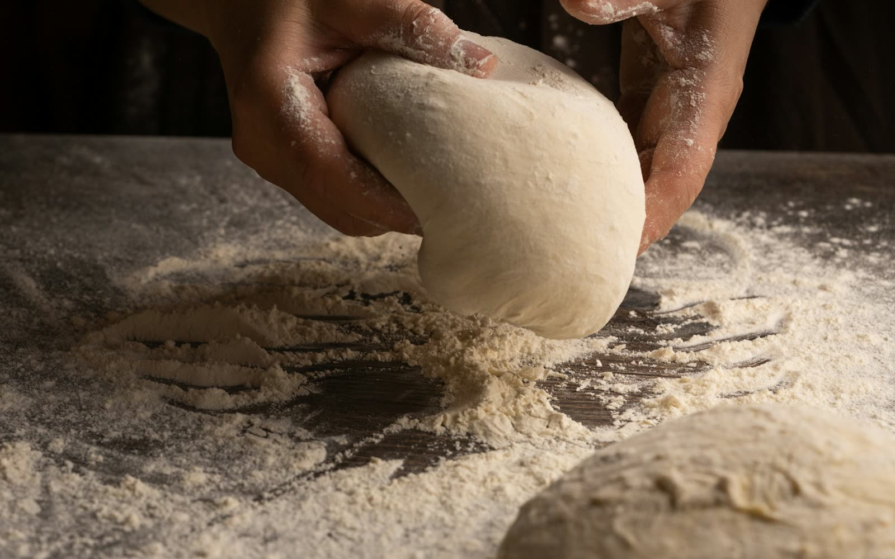
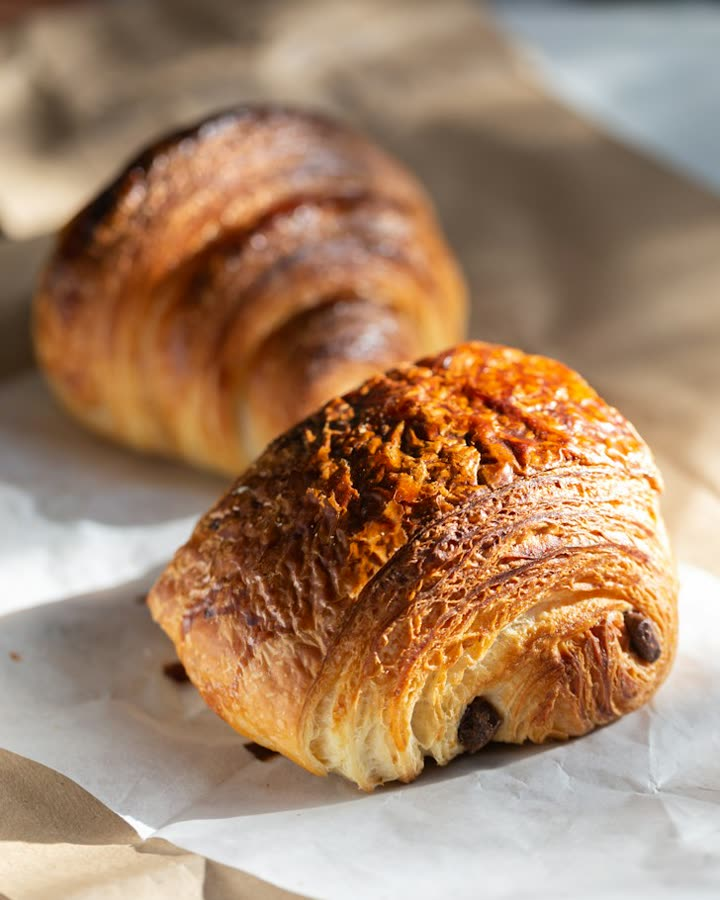
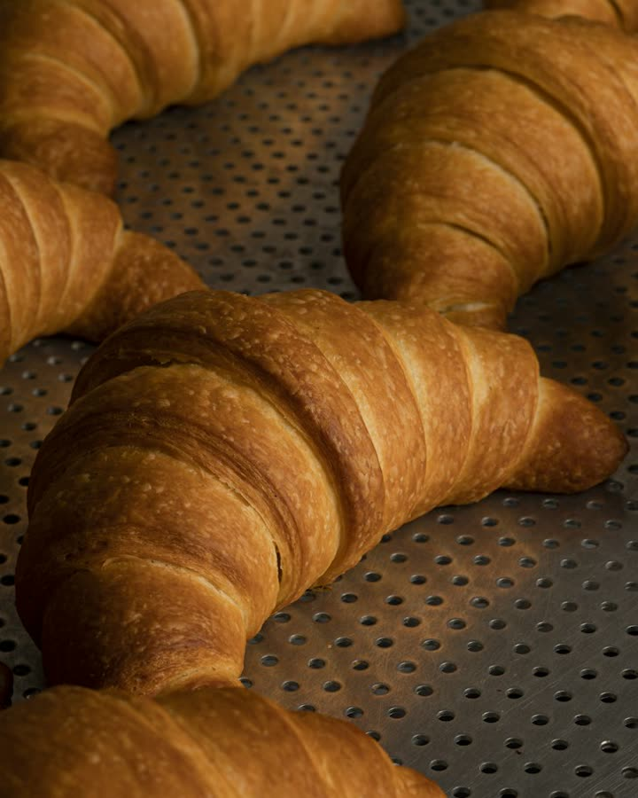
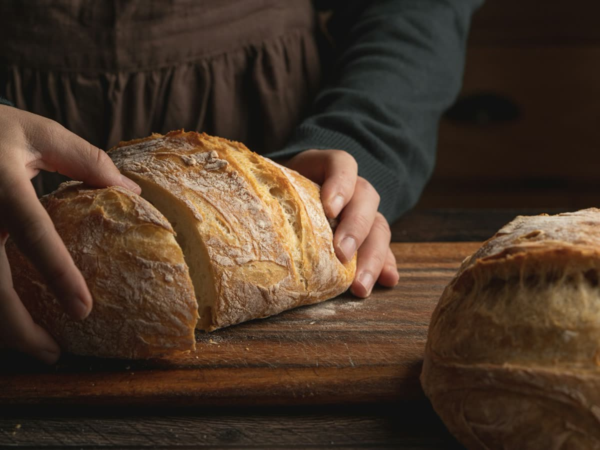
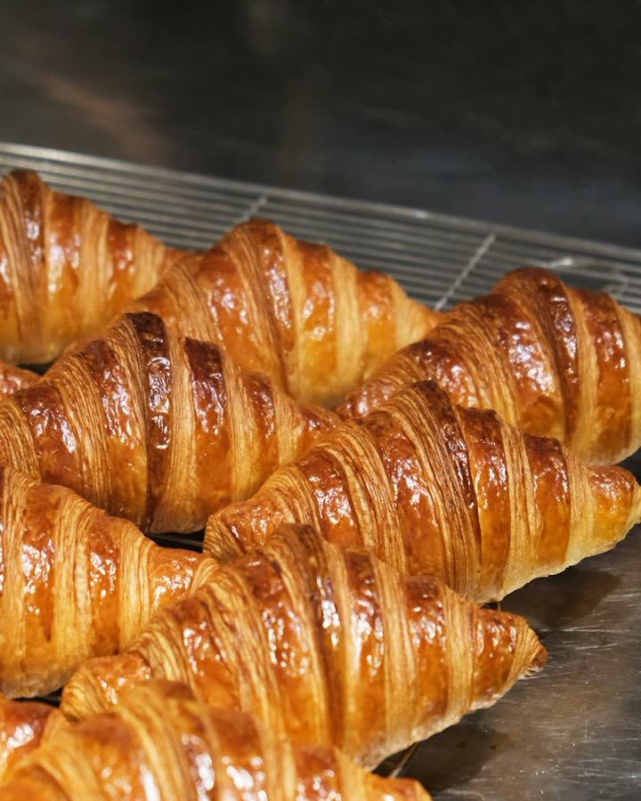
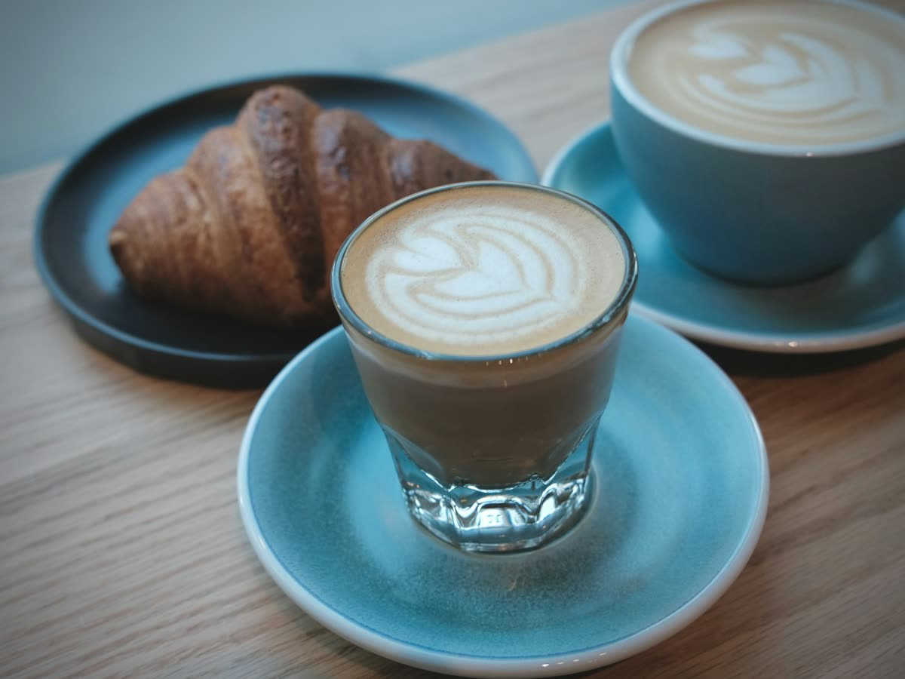
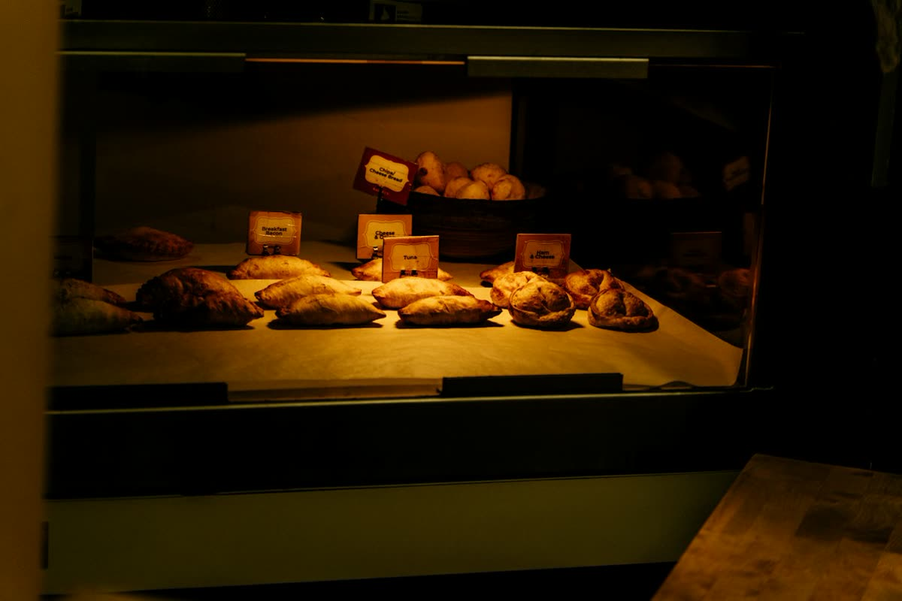

fresh every morning
그날 구운 빵만 냅니다. 남은 빵은 저녁에 이웃과 나누고, 다음 날 새로 굽습니다.
밀가루, 물, 소금, 그리고 시간. 빨리 부풀리는 재료는 쓰지 않고 반죽이 스스로 익을 때까지 기다립니다.
today's bread
1 / 5

뺑 오 쇼콜라
초콜릿을 두 줄 넣어 접었습니다

버터 크루아상
겹겹이 접어 하룻밤 쉬게 합니다

시골빵
겉은 단단하고 속은 촉촉합니다

아침 크루아상
아홉 시에 한 판씩 나옵니다

커피 한 잔과
매장에서는 커피와 함께 드세요
baking hours
다음 빵을 확인하는 중
07:30
식빵 · 모닝빵
09:00
크루아상 · 뺑 오 쇼콜라
11:00
시골빵
14:00
스콘 · 구움과자
빵이 떨어지면 일찍 닫습니다 · 시간은 예시입니다

visit
전날 저녁 여덟 시까지 예약하면 이름을 적어 따로 둡니다
빵 예약하기